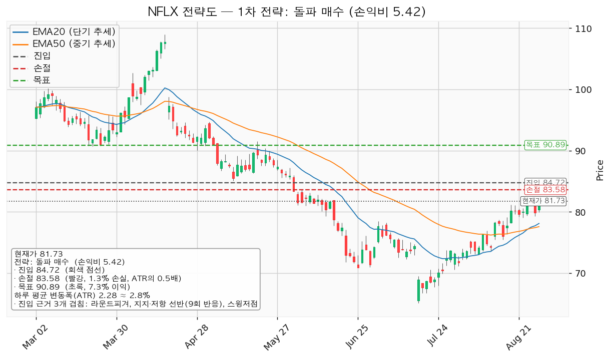
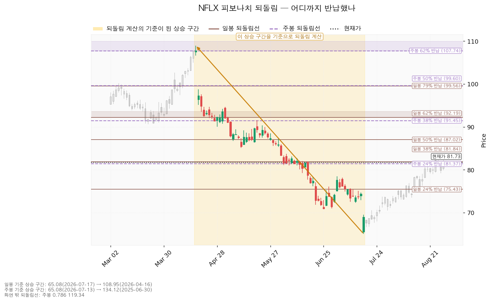
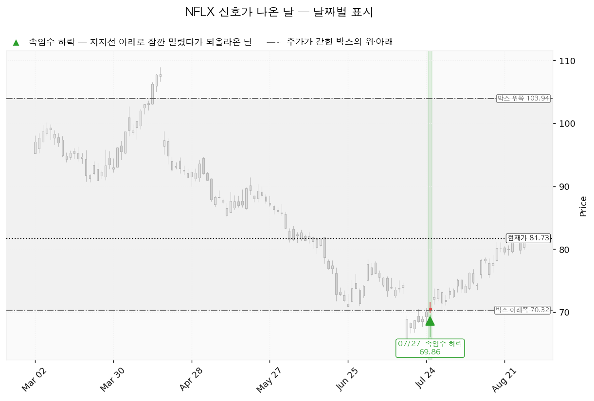
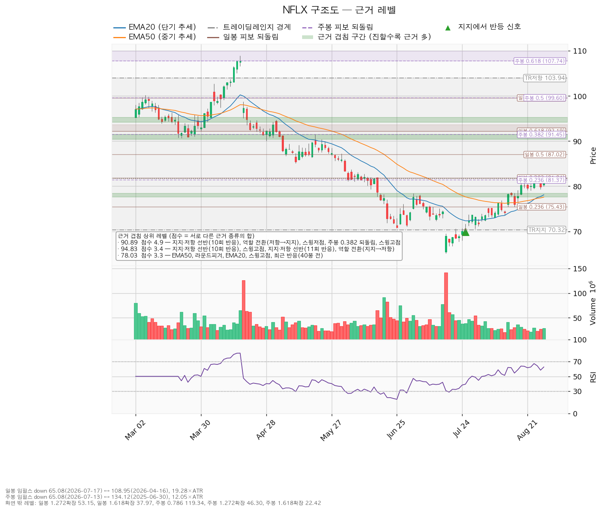

| 구분 | 가격 | 판정 방식 | 현재 상태 |
|---|---|---|---|
| 폐기선 | 70.32달러 (박스 아래쪽) | 이탈 후 3거래일 내 종가 회복 실패 + 반등에서 저항으로 확인 | 유지 중 |
| 회복선 | 84.72달러 (라운드피겨 + 9회 반응한 지지·저항 선반 + 스윙저점) | 일봉 종가로 회복한 뒤 되돌림에서 지지되는지 | 회복 대기 (현재가 대비 +3.66%) |
| 확인선 | 103.94달러 (박스 위쪽) | 일봉 종가 돌파 후 되돌림에서 지지 확인 | 미돌파 |
| 항목 | 값 |
|---|---|
| 현재가 | 81.73달러 (2026-08-28, 시간별 마지막 체결가로 보정) |
| 단기 이평(EMA20) | 78.10달러 — 현재가가 위 |
| 중기 이평(EMA50) | 77.58달러 — 현재가가 위 |
| RSI(14) | 62.66 (0~100 사이 과열·침체 지표, 50 위는 상승 우위) |
| 하루 평균 변동폭(ATR) | 2.28달러 (약 2.8%) |
| 횡보 박스 | 70.32 ~ 103.94달러 (유효) |
| 최근 신호 | 2026-07-27 속임수 하락 69.86달러 |
| 국면 후보 | 매집(accumulation) — 다만 박스 내부 판정은 중립 |
| 컨센서스 | 추천등급 매수, 목표주가 평균 93.66달러, 후행 PER 25.70배, 예상 EPS 3.82달러 |
박스는 어느 구간을 본 것인가. 조회한 일봉 753개 중 최근 180봉을 본 판정입니다. 40봉·90봉·180봉 세 창을 모두 시험했고, 40봉은 가격이 박스 안에 머문 비율 80%, 90봉은 66.7%로 한쪽으로 흐름이 강해 박스로 인정되지 않았으며, 180봉이 머문 비율 95%·방향성 0.368로 가장 잘 들어맞아 채택됐습니다.
박스 안쪽에서 무슨 일이 있었나(매집인지 재분산인지). 박스 모양만으로는 둘을 구분할 수 없어 내부를 봅니다.
① 상승 전환 84.72달러를 종가로 회복하고 지지된 뒤, 103.94달러를 종가로 넘기는 경로입니다. 구조로는 속임수 하락 확인 → 강세 신호 → 되돌림 지지 → 상승 국면 순입니다. 행동은 84.72 회복·지지 확인 후 분할 진입, 103.94 돌파 시 비중 확대입니다.
② 횡보 지속 — 부정 신호가 아니라 매물 소화 국면 70.32를 지키면서 103.94 아래에서 박스를 이어가는 경로입니다. 직전 박스에서 내려오며 쌓인 매물을 소화하는 데 시간이 필요한 국면이며, 그 자체로 나쁜 신호가 아닙니다. 신규 진입은 보류하되 아래 세 가지가 바뀌는지 추적합니다.
③ 시나리오 폐기 70.32 이탈 후 3거래일 내 종가 회복에 실패하고, 반등이 70.32에서 막힐 때입니다. 매집이 아니라 재분산이었다는 뜻이며 추가 저점 갱신 가능성이 열립니다. 행동은 포지션 정리 후, 새로운 매도 절정과 새 박스가 만들어질 때까지 관망입니다.
국면 판정은 횡보 레인지(구조 유지 — 하단 사수 조건부)입니다. 개별 종목 셋업은 매수만 다루며, 아래 두 가지가 산출됐습니다. 현재가 추격을 말리는 상황은 아닙니다.
| 항목 | 돌파 매수 (대표) | 눌림목 매수 |
|---|---|---|
| 진입 | 84.72달러 (+3.66%) | 78.03달러 (-4.53%) |
| 진입 근거 겹침 | 3개 겹침 (3.0점) — 라운드피겨, 9회 반응한 지지·저항 선반, 스윙저점 | 5개 겹침 (3.3점) — EMA50, 라운드피겨, EMA20, 스윙고점, 최근 반응(40봉 전) |
| 집행 손절 | 83.58달러 (진입 기준선에서 ATR의 0.5배 아래) | 76.44달러 (진입 기준선에서 ATR의 0.7배 아래) |
| 1차 목표(T1) | 86.51달러 — 50% 익절, 손익비 1.57 | 80.00달러 — 50% 익절, 손익비 1.24 |
| 2차 목표(T2) | 90.89달러 — 잔여 50%, 손익비 5.42 | 90.89달러 — 잔여 50%, 손익비 8.07 |
| 전 구간 손익비 | 3.50 | 4.66 |
| T1 후 본전 스탑 시 하한 손익비 | 0.79 | 0.62 |
| 구조 증명도 | 돌파 확인형 (가중치 1.0) | 선취형(구조 미확인) (가중치 0.7) |
청산 계획(대표 셋업). 84.72 진입 → T1 86.51에서 50% 익절 → 잔여분 손절을 진입가 84.72(본전)로 올림 → T2 90.89. 전 구간 손익비 3.50이고, T1 체결 후 본전 스탑에 걸릴 경우의 하한 손익비는 0.79입니다.
청산 계획(눌림목 셋업). 78.03 진입 → T1 80.00에서 50% 익절 → 잔여분 손절을 진입가 78.03(본전)로 올림 → T2 90.89. 전 구간 4.66, 하한 0.62입니다.

일봉·주봉 모두 계산 가능한 기준 구간이 있었습니다. 방향은 하락 구간이며, 되돌림선은 아래에서 위로 올라올 때의 저항 후보로 읽습니다.
| 기준 | 기준 구간 | 주요 되돌림선 |
|---|---|---|
| 일봉 | 108.95(2026-04-16) → 65.08(2026-07-17), 하루 변동폭의 19.28배 | 24% 75.43 / 38% 81.84 / 50% 87.02 / 62% 92.19 / 79% 99.56 |
| 주봉 | 134.12(2025-06-30) → 65.08(2026-07-13), 주간 변동폭의 12.05배 | 24% 81.37 / 38% 91.45 / 50% 99.60 / 62% 107.74 / 79% 119.34 |
현재가 81.73달러는 일봉 38% 되돌림(81.84)과 주봉 24% 되돌림(81.37) 사이에 정확히 끼어 있습니다. 이 두 선이 겹친 81.61 부근은 3.0점짜리 근거 구간이고 3봉 전에 실제로 가격이 반응한 자리입니다. 즉 지금 위치 자체가 저항대이며, 이것이 곧바로 추격하지 않고 84.72 회복 확인을 기다리는 이유입니다.

2026-07-27, 69.86달러 — 속임수 하락(spring). 박스 아래쪽 70.32달러 밑으로 잠깐 밀렸다가 되올라온 날입니다. 매집 국면에서 마지막 매도 물량을 털어내는 움직임으로 해석되며, 이 종목의 국면 후보가 매집으로 잡힌 근거입니다. 다만 앞서 본 대로 박스 내부 판정은 아직 중립이라, 이 신호 하나만으로 매집이 확정된 것은 아닙니다. 이후 65.08달러 저점에서 현재 81.73달러까지 올라온 흐름은 이 신호와 방향이 일치합니다.

점수는 서로 다른 근거 종류의 가중치 합입니다. 같은 종류가 여러 개 붙어도 한 번만 더해지므로, 점수가 높을수록 성격이 다른 증거가 여러 갈래로 모인 자리입니다.
| 가격 | 점수 | 겹치는 근거 |
|---|---|---|
| 90.89달러 (90.41~91.48) | 4.9 | 10회 반응한 지지·저항 선반, 역할 전환(저항→지지), 스윙저점, 주봉 38% 되돌림, 스윙고점 |
| 119.47달러 | 3.7 | 주봉 79% 되돌림, 10회 반응 선반, 역할 전환(저항→지지) |
| 94.83달러 | 3.4 | 10회·11회 반응 선반 2개, 스윙고점, 역할 전환(지지→저항) |
| 78.03달러 (77.58~78.44) | 3.3 | EMA50, 라운드피겨, EMA20, 스윙고점, 최근 반응(40봉 전) |
| 91.96달러 | 3.2 | 12회 반응 선반, 역할 전환(지지→저항), 일봉 62% 되돌림 |
| 81.61달러 (81.37~81.84) | 3.0 | 주봉 24% 되돌림, 일봉 38% 되돌림, 최근 반응(3봉 전) |
| 84.72달러 (84.00~85.10) | 3.0 | 라운드피겨, 9회 반응 선반, 스윙저점 |
| 70.59달러 | 2.4 | 박스 아래쪽, 스윙저점 |
90.89달러가 목표로 선택된 이유가 여기서 드러납니다. 위쪽에서 근거가 가장 두꺼운 저항이며, 과거 저항이던 자리가 지지로 바뀐 이력(역할 전환)까지 붙어 있습니다.

| 항목 | 값 | 해석 |
|---|---|---|
| 추천등급 | 매수 | 방향은 셋업과 일치 |
| 목표주가 평균 | 93.66달러 | 현재가 81.73달러보다 위 |
| 이 리포트의 2차 목표 | 90.89달러 | 컨센서스보다 낮은 지점, 근거가 두꺼운 저항 앞에서 끊음 |
| 후행 PER | 25.70배 | — |
| 예상 EPS | 3.82달러 | — |
애널리스트 목표주가(93.66)와 구조상 저항(90.89)이 근접합니다. 다만 그 사이 91.96·94.83달러에도 두꺼운 저항이 깔려 있어, 컨센서스 목표까지 곧장 가기보다 90~95달러 구간에서 매물을 만날 가능성이 큽니다.
주도주 여부는 아직 아닙니다. 근거는 세 가지입니다. ① 직전 박스(97.59~129.53)에서 아래로 이탈해 내려온 뒤 아직 그 구간을 되찾지 못했습니다. ② 박스 안 저점이 절하되고 지지 테스트 거래량이 늘고 있어 내부 판정이 중립입니다. ③ 상승봉 대비 하락봉 거래량 우위가 1.13배로 미미합니다. 103.94달러를 종가로 넘긴 뒤 되돌림에서 지지되는 것이 확인될 때 주도주 후보로 재평가하겠습니다. 섹터 강도와의 대조는 시황 담당의 주도섹터 판정을 함께 받으면 정밀도가 올라갑니다.
본 자료는 정보 제공 목적이며 투자 권유가 아닙니다. 최종 투자 판단과 책임은 투자자 본인에게 있습니다.